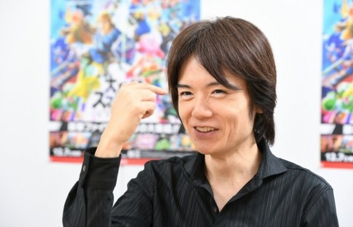

Masahiro Sakurai
Leyenda de NINTENDO
Ken Kutaragi fue un trabajador y presidente importantede NINTENDO ya que elevo a gran escala la empresa y participo en varios proyectos.
@robertwilliams
Bill Gates
Presidente de Xbox
Bill Gates es un Gran empresario que supo como entrar al mercado de los video juegos teniendo una gran competencia y sin contar con un antecedente gamer.
@angelinawidowKen Kutaragi
Fundador de Play Station
Ken Kutaragi fue uno de los principales responsables de la creacion de la empresasubderivada de SONY, la PLAY STATION.
@patrickanderson!Leyendas
Como puedes ver estos hombres son un gran refrente de la industria, han marcado una huella invorrable no solo en su comunidad si no en la historia de la humanidad.